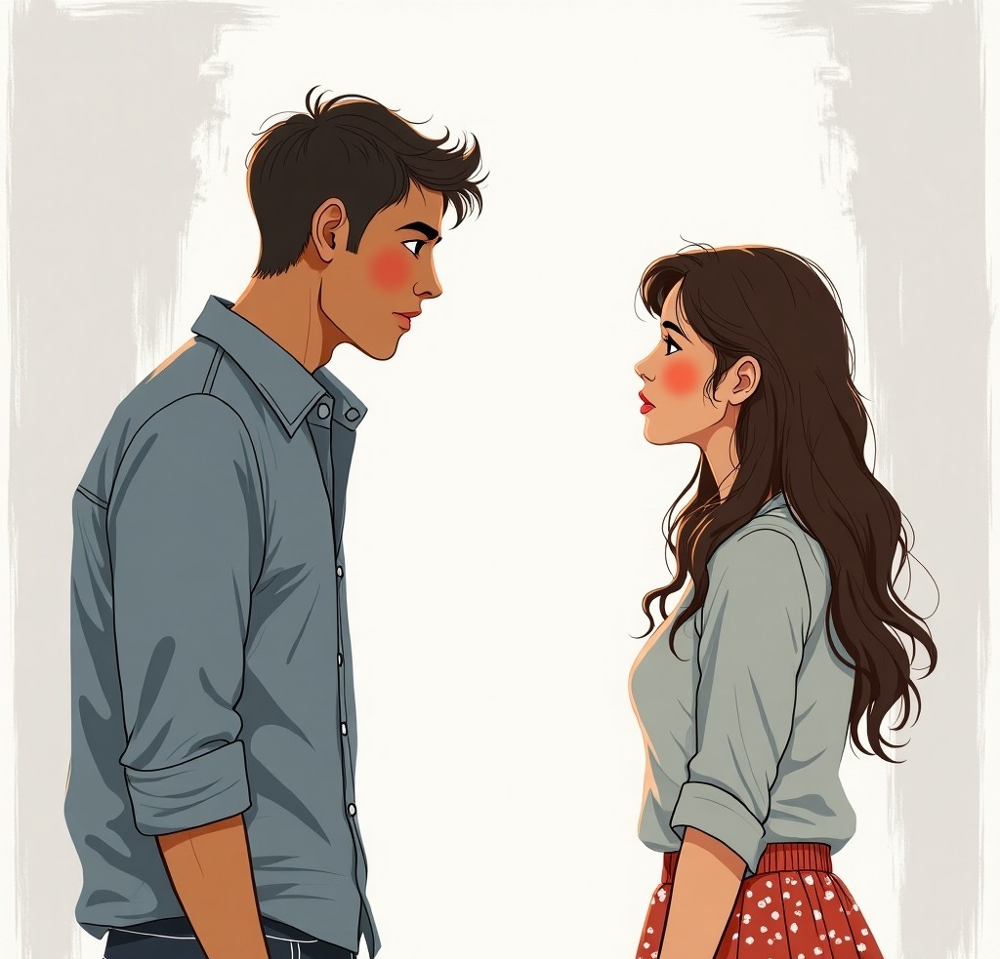
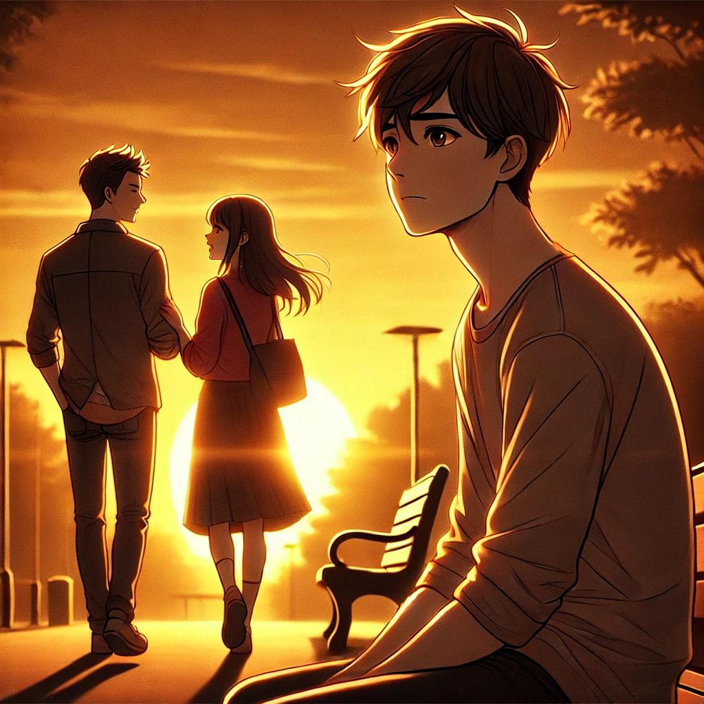
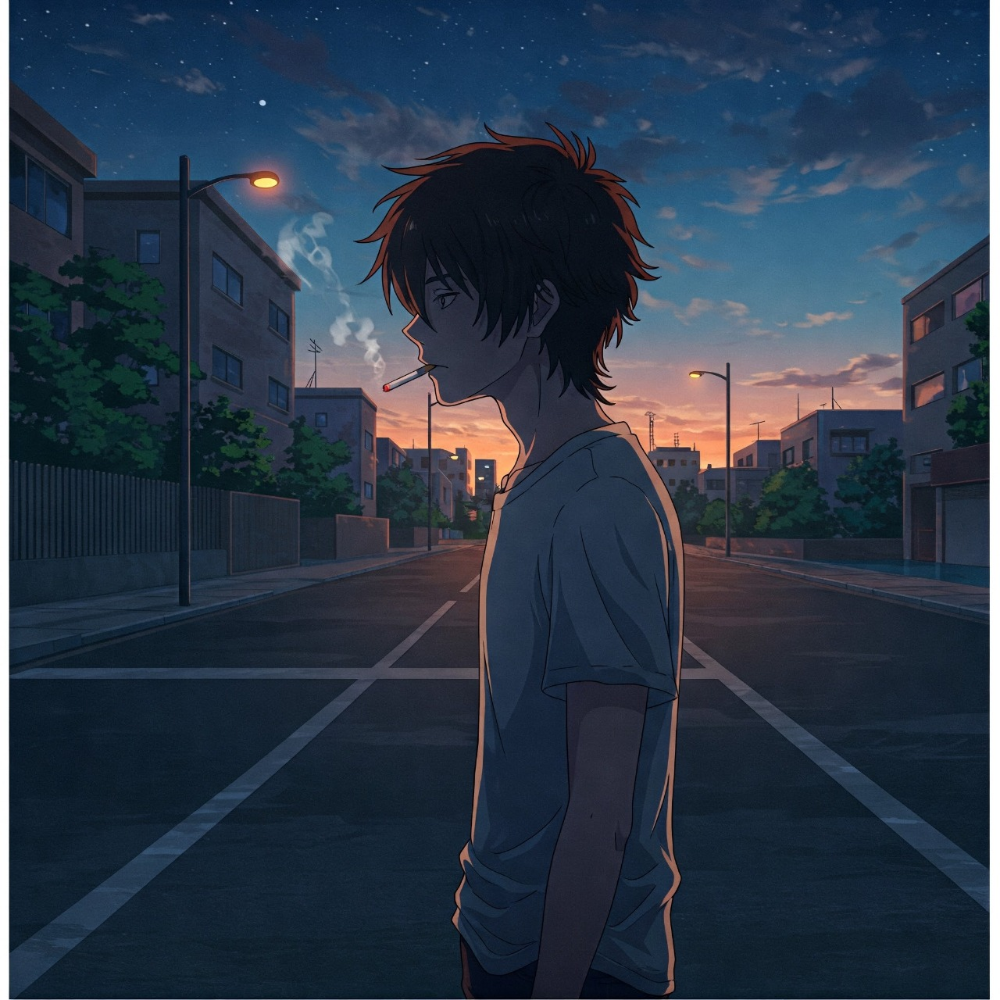

2026
14 de Febrero, 2026
En estas páginas puedes enviarme un documento o un texto con lo que necesites escribir en el libro. Puedes personalizar las imágenes, los títulos, los textos y el fondo del libro por imagen de fondo o colores que quieras.
Puedes escribir lo que sea para él o ella.
Aquí puedes poner tus promesas, recuerdos favoritos o simplemente contar nuestra historia desde el principio.
Ojo! Si no te fluye la emoción, ideas sobre escritos.
En las siguientes paginas puedo darte tips, ideas y formatos de escritura que puedas usar para escribirle algo bonito a el o ella y modificarlo si te parece.

10 de Febrero, 2025
Nos hicimos amigos, no de golpe ni dramáticamente, simplemente sin esfuerzo. Ella era caos y luz, y yo era tranquilidad y constancia. De alguna manera, simplemente... encajamos.
Ella me enviaba preguntas aleatorias por mensaje:
"Si pudieras estar en cualquier lugar ahora mismo, ¿dónde estarías?"
Y yo respondía:
"Probablemente en casa. Es cómodo."
Entonces ella enviaba:
"Respuesta incorrecta. La respuesta correcta es: en cualquier lugar menos en casa, conmigo."
Debería haberlo sabido entonces. Debería haber visto la forma en que me estaba atrayendo a su mundo, pieza por pieza.
14 de Febrero, 2025
Día de San Valentín.
Quería decírselo hoy. Que no era solo mi mejor amiga. Que cuando se reía, el mundo tenía sentido. Que su voz era mi sonido favorito. Que estaba enamorado de ella.
¡Pero antes de que pudiera hacerlo, me habló de él!

El chico que le gustaba. El que hacía que su corazón se acelerara. Y no era yo.
Sonreí. Escuché. Dije todas las cosas correctas. Y más tarde esa noche, escribí todas las incorrectas.
20 de Febrero, 2025
Ella no lo sabe. Nunca lo sabrá. Y tal vez sea lo mejor.
Me llama su "persona favorita". Ojalá supiera lo que eso provoca en mí.
25 de Febrero, 2025
Ella es feliz. Eso debería ser suficiente, ¿verdad?
Si amas a alguien, quieres que sea feliz, incluso si su felicidad no te incluye a ti.
La gente dice: "El tiempo lo cura todo."
Pero la gente miente.

🌹❤
1 de Marzo, 2025
La vi hoy, parada bajo la lluvia, riendo como si perteneciera a ella. Y de repente, me di cuenta:
Ella no es mía para amarla. Nunca lo fue.
Quizás algún día conozca a alguien cuya risa se sienta como un hogar, que me mire de la forma en que yo la miro a ella. Quizás.
Hasta entonces, seguiré escribiendo.
Por ella. Por mí. Por la historia de amor que nunca fue.
"Durante mucho tiempo, pensé que esta historia era sobre ella. Pero tal vez fue sobre mí todo el tiempo; sobre aprender a amar, a perder y a dejar ir.
Ella nunca fue mía para conservarla. ¿Pero el amor? Eso fue real. Y eso es suficiente.
Así que esta es mi entrada final. No porque la historia termine aquí, sino porque es hora de comenzar una nueva."